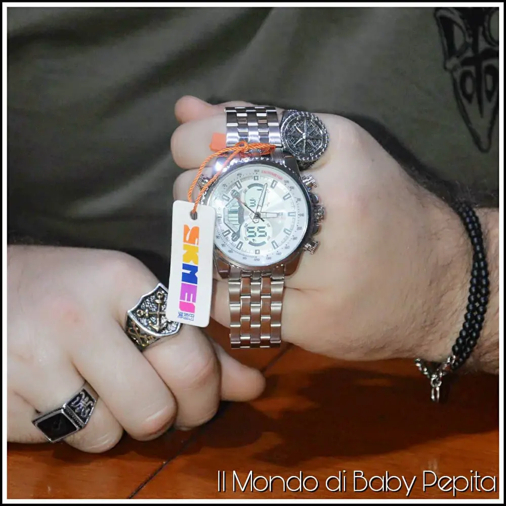
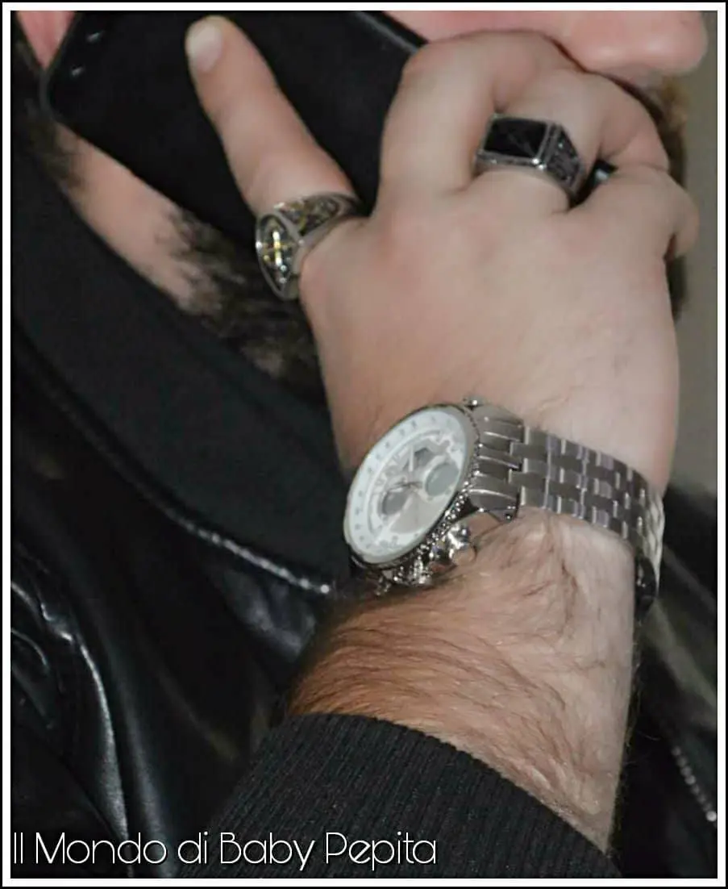

Orologio da Polso Uomo
Pronti per i regali di natale? Ci state pensando già come me?
Beh, da oggi sarò un portale di idee fino a Natale. .
Si, voglio proporvi i regali più convenienti e carini per lui e per lei.
Orologio: Infatti oggi voglio parlarvi di un articolo che in realtà già ve ne ho parlato ma che è uno dei must tra i regali di natale di tutti i tempi soprattutto per uomo ovvero gli orologi.
Questo che vi mostro oggi è davvero bello, a me ha colpito proprio perché è elegante ma al contempo va benissimo anche da indossare su un outfit sportivo. Insomma un orologio alternativo.
Il cinturino è anch'esso in acciaio di un doppio materiale però, cioè misto tra metallo lucido e metallo satinato in modo da formare un design unico e particolare.

È di colore cromato ma è disponibile anche con il quadrante nero.
Le funzionalità sono varie cioè:
- cronometro;
- luminosità notturna;
- impermeabile;
Oltre ad essere un orologio analogico quindi con lancette classiche, ha (come potete vedere in foto) l'aggiunta di una piccola finestra nel quadrante che segna l'orario anche digitale.
Queste due funzioni non sono obbligate tra loro ovvero, le lancette ed il display digitale possono essere impostati su orari diversi.
Credo che questa sia una gran 'figata', permettetemi il termine, magari per chi ha bisogno di sapere il fuso orario di un'altra nazione.

Inoltre, nelle finestrine digitali è possibile non solo impostare un orario diverso ma anche impostare il cronometro, la sveglia oppure guardare la data.
Poi, mentre per vedere l'ora di notte o in posti bui ci sono le lancette fluorescenti, per vedere invece le finestrine digitali appunto al buio c'è il pulsante in alto a sinistra che basta premere e diventa per qualche secondo fluorescente.
Considerando il prezzo e le tante funzionalità io direi che è un orologio più che valido.
L'unica pecca però, è che non arriva in una confezione ma bensì in una bustina, il che rende difficile il modo per poterlo regalare ma se si vuole comunque comprare e poi fare una confezione fai da te allora è un buon acquisto.
Prezzo: 17.49€
Per acquistare quest'orologio CLICCA QUI.